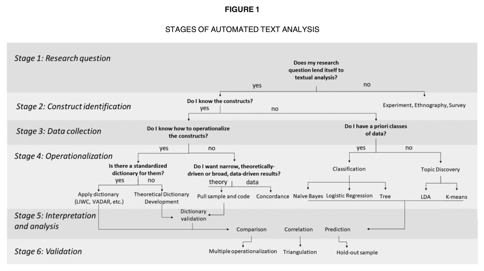
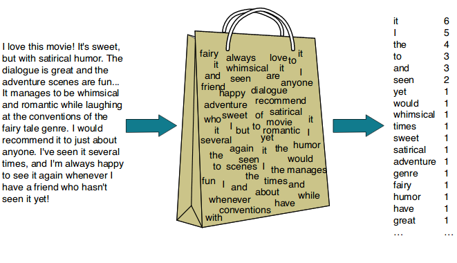
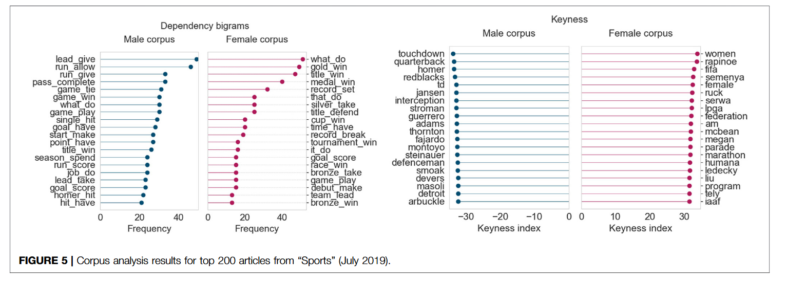
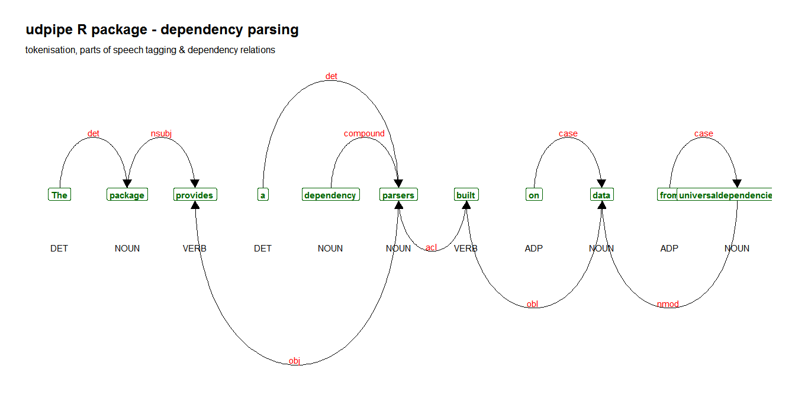

library(stringdist)
s1 <- "Décathlon"
s2 <- "decathalon"
distance <- stringdist(s1, s2, method = "lv")
cat("Distance de Levenshtein entre", s1, "et", s2, "=", distance)Distance de Levenshtein entre Décathlon et decathalon = 3Introduction au NLP/TALN - Traitement des données textuelles
Paris Dauphine - PSL
Note
👉 En marketing digital : les consommateurs produisent massivement du texte (avis, posts, hashtags).
- Exemple : des millions d’avis TripAdvisor / Google Reviews chaque jour.
- Exemple réseaux sociaux : hashtags #AI, #TikTokMadeMeBuyIt, #Dropshipping qui se renouvellent en continu.
- Exemple SEO : Google doit sélectionner des mots-clés pertinents → stratégie centrale en référencement.
La langue comme système (catégories, oppositions, règles).
Finalité : décrire l’architecture qui stabilise les usages.
Exemple : le hashtag #MondayMotivation comme convention collective sur X/LinkedIn qui structure les pratiques.
Le langage comme activité située et sociale.
Finalité : comprendre ce que fait un message et comment il circule.
Exemple : le détournement ironique #MondayDespair illustre l’usage créatif et viral sur TikTok.
Note
Ces perspectives s’articulent : la structure rend les énoncés intelligibles ; l’usage leur donne portée et effets.
Conséquence : distinguer conventions collectives (formats, hashtags, routines) et innovations singulières (mèmes, détournements).
Exemple : la story Instagram = convention collective ; un remix TikTok ou un mème détournant une pub de luxe = innovation singulière.
Notions clés
La structure module le sens : - “pas vraiment satisfaisant” ≠ “vraiment pas satisfaisant”.
- Les relations syntaxiques révèlent cibles (produit, marque, service) et attributs (prix, qualité, délai).
Exemple SEO : “acheter iPhone 16 pas cher” ≠ “iPhone 16 pas cher acheter”. La syntaxe change la pertinence des résultats Google.
Note
Indicateurs récurrents
- Négation
- Modalité (“il faudrait”, “on doit”)
- Intensité (“très”, “trop”, “vraiment”)
- Comparaison (“plus/moins que”)
Exemple : un avis “Ce service est trop lent” → intensité négative claire détectable en NLP.
Les messages combinent des fonctions avec des dominantes variables :
Les genres (unboxing, SAV, teasing, témoignage) stabilisent des combinaisons de fonctions.
Exemple de campagne : Nike
“Dire, c’est faire.”
Un énoncé évalue et agit : il oriente l’échange, peut enclencher des réponses, amplifier ou clore une discussion.
Exemple : un avis Google “Je recommande cette boutique” = acte illocutoire de recommandation.
Important
Indices
- Verbes et formules illocutoires (“je recommande / déconseille”)
- Traces perlocutoires (réponses, relais, reconfigurations du fil)
Exemple 2024 : un tweet “Boycottez Shein” = illocutoire ; la tendance #BoycottShein qui explose = perlocutoire.
“You shall know a word by the company it keeps.” — J. R. Firth
Conséquence : le sens relationnel se lit dans les profils de contexte (collocations, patrons d’usage, régularités de voisinage).
Exemple : Google apprend que “meilleur smartphone” ≈ “top téléphone” car ils apparaissent dans des contextes très proches.
Note
Pratiques d’observation
- Repérer cooccurrences fortes
- Identifier collocations (“service client”, “trop + adjectif”)
- Suivre les patrons relationnels stables
Exemple : “premium” cooccurrent avec “qualité” → connotation positive ; “prix” cooccurrent avec “trop” → connotation négative.
👉 La fréquence renseigne moins sur l’“importance” que sur le rôle (structurel, distinctif, émergent).
Question directrice
Que dit la position fréquentielle d’une forme sur sa fonction discursive et sa place dans le répertoire d’une communauté ?
Exemple classique : loi de Zipf sur Ulysses de James Joyce. 
👉 Un message s’inscrit dans des chaînes : références et paratexte orientent sa lecture et sa circulation.
Indices de réseau
Exemple : un duo TikTok qui répond à une vidéo originale, avec emojis + hashtag sponsorisé → la circulation du texte est déjà orientée par le format.
| Théorie / outil | Exemple digital | Utilité marketing |
|---|---|---|
| Saussure (langue/parole) | Story IG (code) vs remix TikTok (innovation) | Adapter format & créativité au canal |
| Chomsky/Tesnière | Syntaxe requêtes SEO (“acheter… pas cher…”) | Pertinence SEO & compréhension requêtes |
| Jakobson (6 fonctions) | Campagne Nike multi-fonctions | Conception messages & CTA efficaces |
| Austin (actes de langage) | “#BoycottShein” (illo→perlo) | Gérer réputation & crises |
| Firth/Harris (contextes) | “premium” ↔︎ “qualité”, “prix” ↔︎ “trop” | Analyse de sentiment & positionnement |
| Zipf (fréquences) | Hashtags campagne : fréquent/moyen/rare | Social listening : bruit / thèmes / signaux |
| Genette (réseaux) | Duos/stitches, parodies, vignettes YouTube | Stratégies de diffusion & formats natifs |
 {.fragment}
Chaîne d’analyse : Structure → Fonction → Contexte → Distribution → Acte → Réseau.
Note
👉 Ces étapes peuvent être adaptées selon la recherche : ne pas trop nettoyer au risque de perdre du sens ou des informations.
Avant toute analyse, on segmente le texte brut en tokens (unités). C’est la base de la DTM/BoW, du TF-IDF, des cooccurrences et de la keyness. (Le POS tagging est vu juste après.)
, !),#AmazonPrime),@Amazon),😍).l’expédition → ["l'", "expédition"], c’est → ["c'", "est"]<URL>, <NUM>) si bruitTexte :
“J’adore le service client d’Amazon, c’est top ! 😍 #AmazonPrime”
Tokens :
['J’', 'adore', 'le', 'service', 'client', "d'", 'Amazon', ',', 'c’', 'est', 'top', '!', '😍', '#', 'AmazonPrime']
Pourquoi c’est la base ?
Sans tokens, on ne peut pas compter (fréquences/Zipf), construire BoW/TF-IDF, ni comparer avec keyness.

Exemple de DTM
Corpus :
Matrice (DTM) :
| produit | excellent | médiocre | cher | pas | très | vraiment | assez | |
|---|---|---|---|---|---|---|---|---|
| D1 | 1 | 1 | 0 | 1 | 1 | 0 | 0 | 0 |
| D2 | 1 | 0 | 1 | 1 | 0 | 1 | 0 | 0 |
| D3 | 1 | 1 | 0 | 1 | 1 | 0 | 1 | 0 |
| D4 | 1 | 0 | 1 | 1 | 0 | 0 | 0 | 1 |
Chaque ligne est un vecteur qui représente un document.
La fréquence brute (compter les mots) est limitée. Le TF-IDF est une pondération plus intelligente qui vise à faire ressortir les mots spécifiques d’un document.
Un TF-IDF élevé signale un mot-clé caractéristique.
Les formules
Pour un terme \(t\) dans un document \(d\) au sein d’un corpus \(D\) :
Fréquence du terme (TF) : \(TF(t,d) = \frac{\text{nombre de fois où } t \text{ apparaît dans } d}{\text{nombre total de mots dans } d}\)
Fréquence inverse de document (IDF) : \(IDF(t,D) = \log\left(\frac{\text{nombre total de documents}}{\text{nombre de documents contenant } t}\right)\)
Score TF-IDF : \(TFIDF(t,d,D) = TF(t,d) \times IDF(t,D)\)
Avant toute analyse complexe, des indicateurs simples permettent de comprendre la nature des données :
Formule du TTR
\[ TTR = \frac{\text{Nombre de mots uniques (types)}}{\text{Nombre total de mots (tokens)}} \] Un TTR proche de 1 indique un vocabulaire très varié ; un TTR faible un langage répétitif.
Le Type-Token Ratio (TTR) est un bon début, mais faiblesse majeure -> très sensible à la longueur du texte. Un texte plus long aura mécaniquement un TTR plus faible car on est forcé de répéter des mots.
Pour comparer des textes de longueurs différentes, on utilise des indicateurs plus avancés comme le MTLD (Measure of Textual Lexical Diversity).
Applications en Netnographie
Analyser la diversité lexicale permet de :
La lisibilité mesure la facilité de lecture et de compréhension d’un texte. Elle ne dépend pas seulement de la richesse du vocabulaire, mais aussi de la complexité syntaxique.
La plupart des scores de lisibilité se basent sur deux variables simples :
Le score le plus célèbre en anglais est le Flesch-Kincaid Reading Ease.
Scores & Applications
La plupart des scores suivent une logique de ce type : \(Score = A - (B \times \frac{\text{mots}}{\text{phrase}}) - (C \times \frac{\text{syllabes}}{\text{mot}})\)
C’est la formule historique (1958) et la plus directe pour le français. Le principe est le même que pour l’anglais : combiner la longueur des mots et des phrases.
La formule pour le français
Le score est calculé ainsi :
\(Score = 207 - (1.015 \times \text{longueur moyenne des phrases})\) \(- (73.6 \times \text{nombre moyen de syllabes par mot})\)
pyphen : pour compter les syllabes en français.textstat : pour calculer directement les scores de lisibilité.quanteda ou koRpus offrent aussi ces fonctionnalités.A retenir
Le principe reste le même : un texte simple = mots courts + phrases courtes. Les formules pour le français ne font que calibrer cette idée aux particularités statistiques de notre langue.
On dépasse le “sac de mots” pour analyser quels mots apparaissent ensemble.
Mesurer la force d’association
On peut quantifier si une co-occurrence est due au hasard ou à un lien sémantique fort. Le Pointwise Mutual Information (PMI) est une mesure courante.
\(PMI(x,y) = \log_2\left(\frac{P(x,y)}{P(x)P(y)}\right)\)
Un PMI élevé suggère un lien sémantique fort.
Principe statistique
Pour chaque mot, on construit un tableau de contingence :
| Corpus A (cible) | Corpus B (réf.) | |
|---|---|---|
| Freq. mot X | a | b |
| Freq. autres mots | c | d |
Tests possibles :
- \(\chi^2\) : intuitif mais sensible aux faibles effectifs.
- Log-Likelihood \(G^2\) : plus robuste, devenu la référence (ex. AntConc, quanteda).

👉 Conclusion : la presse décrit les hommes en action, mais ne parle des femmes que lorsqu’elles gagnent.
L’étiquetage morphosyntaxique (POS Tagging) attribue à chaque mot sa catégorie grammaticale (DET, NOUN, VERB/AUX, ADJ, ADV, …) et, selon les outils, des traits morphologiques (Genre, Nombre, Temps, etc.).
Le/DET produit/NOUN est/AUX vraiment/ADV excellent/ADJ
Le standard Universal Dependencies
Outils compatibles : spaCy, Stanza/Trankit, UDPipe.
L’analyse en dépendances syntaxiques est une étape du traitement automatique du langage naturel (TALN) qui vise à représenter la structure d’une phrase à partir des relations de dépendance entre mots.
Elle est généralement formalisée sous forme de graphes orientés (souvent en arbres), où :
Cette approche permet d’identifier qui fait quoi dans une phrase et de modéliser des structures grammaticales complexes.
Elle est largement utilisée dans des applications comme :
Un cadre de référence majeur pour cette tâche est le projet Universal Dependencies, qui propose des annotations cohérentes pour de nombreuses langues.

La NER (Named Entity Recognition) détecte et classe automatiquement les entités du monde réel mentionnées dans un texte.
Applications en netnographie
Quelques idées :
Jean Dupont travaille chez Google à Paris depuis 2023.
Les textes web sont pleins de variations : fautes de frappe, accents manquants, abréviations.
Exemple concret
Comment regrouper les mentions d’une marque ?
"Decathlon""Décathlon""decathalon""décahlon"library(stringdist)
s1 <- "Décathlon"
s2 <- "decathalon"
distance <- stringdist(s1, s2, method = "lv")
cat("Distance de Levenshtein entre", s1, "et", s2, "=", distance)Distance de Levenshtein entre Décathlon et decathalon = 3La distance de Levenshtein entre "Décathlon" et "decathalon" est de 3 (D→d, é→e, + insertion de “a”).
En fixant un seuil de distance faible (ex: ≤ 2), on peut automatiquement considérer que ces variantes désignent la même entité. C’est essentiel pour fiabiliser les comptages.
Langage
👉 Pour le marketing digital et la netnographie : comprendre que le langage est à la fois structure, sens et action.